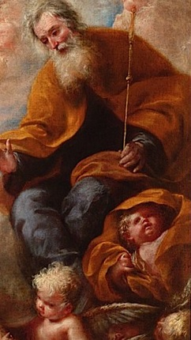
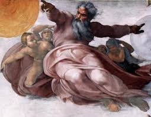

“AMOR DIVINO”
-PLENO E TOTAL-
DEUS PAI CRIA A IMAGEM DA PONTE
O PAI ETERNO ensina:
“A Ponte da Salvação se estende do Céu a Terra, graças à união (hipostática) que realizei com o homem formado do limo da Terra. Essa Ponte é o MEU FILHO JESUS e possui três degraus: dois construídos no madeiro da Cruz, e o terceiro, quando ELE na amargura dos maus tratos e sofrimentos, bebeu fel e vinagre. Em tais degraus reconhecerás três estados da alma. O primeiro degrau é formado pelos pés DELE; significa o “Amor”, pois como os pés transportam o corpo, assim o duplo amor (os dois pés) faz caminhar a alma. Os pés cravados na Cruz servem de degrau para alcançar a Chaga do Peito, que te revela o segredo do Coração. Assim, o fiel após subir até os pés pelo Amor, fixa o pensamento no CORAÇÃO aberto de CRISTO e saboreia SUA CARIDADE inefável e consumada. Disse CARIDADE CONSUMADA, porque CRISTO vos ama sem qualquer interesse pessoal; em nada sois de utilidade para ELE, que forma uma só coisa COMIGO e o ESPÍRITO SANTO. Vendo-se amada por ELE, a pessoa se enche de Caridade. E na continuidade, estando no segundo degrau consegue atingir o terceiro degrau, que é a boca de CRISTO. Nela as pessoas encontram a “Paz”, depois de vencer a grande batalha contra os seus próprios pecados.
Esta evolução acontece gradativamente. No primeiro degrau o cristão se afasta da afeição terrena, despoja-se dos vícios; no segundo, adquire um manancial de Virtudes; no terceiro, goza a Paz de CRISTO. A Ponte é alta. “Mas quando se passa por ela, a abominável água do pecado não consegue atingir a alma”.
OS QUE VÃO PELO RIO DO PECADO
DEUS PAI continua ensinando a Santa Catarina:
“Quero que entendas melhor a maldade e a crueldade dos pecadores, que projetando a transgressão, mergulham nas turbulentas águas do rio do pecado. Começam por conceber o mal no próprio íntimo, fixando-o doentiamente; depois o praticam, perdendo a “Graça”.
“Afogados no rio do falso amor mundano morrem para a “Graça”. Assemelha-se ao cadáver, privado de estímulos salutares, porque não se move a não ser carregado por outros. Então, os pecadores “assim mortos”, a memória não retém a recordação da MINHA Misericórdia, a Inteligência preocupada com a Sensualidade, não compreende a MINHA VERDADE, sua Vontade se apega as realidades mortas, permanecendo insensível a MINHA VONTADE”.
“O pecador ambicionando ser o dono do mundo, deixa-se dominar pelo “nada”, pelo “desprezível”. Sim, o pecado é “um nada”...
“Tais pessoas que procedem assim, são seus escravos, são escravos do pecado!”
“Em outras palavras, os pecadores são árvores mortas, suas raízes nascem e cresce no solo do Orgulho, sua seiva é o Egoísmo, e o seu interior é trabalhado pelo Mal. São Impacientes, Gananciosos e lhes falta o Discernimento. A pobre alma do pecador vive cheia de ingratidão, que dá origem a todos os males”.
“Se o pecador observasse e tivesse gratidão pelos benefícios que diariamente envio a humanidade, e, portanto a ele também, ia ME conhecer e verdadeiramente conheceria a si mesmo em MIM, o seu CRIADOR. Ia ME amar. Mas ele é cego que mergulha sem rumo pelo rio do pecado, sem ter consciência das MINHAS Verdades, e o que aquelas águas irão lhe proporcionar! Os frutos mortais desta árvore são tão numerosos quanto os variados e diversos tipos de pecado. Na verdade, os pecadores nem se recordam do precioso e SAGRADO SANGUE do MEU FILHO UNIGÊNITO derramado em beneficio da humanidade de todas as gerações, para livrá-los da morte eterna, e, portanto, inclusive em benefício deles também. Esta é a injustiça, este “esquecimento da Verdade”, que conduz a um julgamento falso a respeito do qual, o mundo é e será repreendido pelos MEUS servidores até o Juízo Final”.
O PAI ETERNO continua explicando e ensinando:
“A primeira repreensão que enviei a humanidade foi com a Vinda do ESPÍRITO SANTO sobre os Discípulos, que fortalecidos pelo MEU Poder, iluminados pela Sabedoria do MEU AMADO FILHO, receberam a plenitude do ESPÍRITO SANTO PARÁCLITO. O DIVINO ESPÍRITO SANTO é um só COMIGO e o MEU FILHO. Também pela boca dos Apóstolos o mundo foi repreendido e tiveram conhecimento da Mensagem de CRISTO sobre o Amor DIVINO. Da mesma maneira continuaram repreendendo o mundo, os Sacerdotes, sucessores dos Apóstolos, assim como através das Sagradas Escrituras. A todos tem sido mostrada a verdade sobre o vício e a Virtude, sobre os frutos da Virtude e as consequências do pecado. Cada um dos Apóstolos sofreu e seus sucessores sofrem as tentações da Sensibilidade. Permiti e ainda permito essas dificuldades para o crescimento da Graça e das Virtudes nas almas. Toda humanidade, como todos os Santos nasceram no pecado, mas também se nutriram do mesmo alimento (Eucarístico). EU posso e quero socorrer a quem busca a conversão do coração e quer ser socorrido por MIM. Assim, acontecerá à grande mudança, os pecadores abandonam o “rio do pecado” e buscando a conversão do coração se encaminham pela “Ponte Eterna”, vencendo os seus degraus e vivendo a preciosa e sagrada Mensagem do MEU FILHO”.
O PERMANENTE CONVITE DIVINO

DEUS quer a salvação de todas as pessoas, sem exceções. Até o último momento da vida, o pecador é convidado a ser correto, pensar com inteligência e buscar a conversão do coração, para a sua própria salvação eterna. Não se corrigindo enquanto pode fazê-lo, uma próxima repreensão os condenará. A palavra Divina ordenará:
“Levantai-vos, ó mortos, vinde para o julgamento! Tu que morreste para a Graça e morto chegas ao fim da vida terrena, levanta-te, aproxima-te do Supremo Juiz. Aproxima-te com tua maldade, com teus julgamentos falsos, com a lâmpada da tua fé apagada. No santo Batismo ela te foi entregue acesa. Tu a apagaste com o sopro do Orgulho e da Vaidade. Criou outras preferências, amaldiçoou e não se converteu, permanecendo com o espírito ganancioso e cevado pela maledicência, correndo alegre pelo rio dos prazeres e pelas incitações do demônio. Tua Vontade interesseira foi facilmente conduzida pelo diabo para a estrada do mal, para a eterna condenação”.
No instante da morte, somente a alma estará diante do Juízo Divino e será repreendida, porque o corpo estará na sepultura ou no crematório, e será totalmente desintegrado. Todavia, no Juízo Final, também todos os corpos ressuscitarão, cada corpo se juntará a sua alma, e com ela permanecerá por ter sido instrumento da alma na prática do bem ou do mal, pela própria vontade de cada pessoa. Por esse motivo, os justos terão no corpo glorificado uma brilhante luz e um amor infinito. Enquanto os réus do inferno sofrerão pena eterna com seu corpo e sua alma, usados terrivelmente para a transgressão e o pecado.
CAMINHOS DA CONVERSÃO
O PAI ETERNO continua ensinando:
“Por medo da punição, tais pessoas (os pecadores) saem do rio do Pecado, pela Confissão Sacramental, tirando o “veneno” que o “escorpião” (o maligno) neles injetara. Aos poucos eles reagem e se dirigem a “margem do rio”, agarrando a “Ponte da Salvação”.
“Todavia, só o temor do castigo não é suficiente para fazer o pecador progredir e se afastar dos pecados mortais. É preciso encher a alma de Virtudes, sob o alicerce da Caridade (o amor). Só o temor, o medo, não concede a Vida da Graça, o pecador terá que começar galgando o primeiro degrau da Ponte (os dois pés do SENHOR) que conduzem a CRISTO. Muitas vezes, os próprios sofrimentos causados pela vida pecaminosa produzem tédio e repulsa. Quando o medo é acompanhado pela iluminação da fé, os pecadores passam do mal para o bem. Entretanto, geralmente aqueles que deixam o pecado só por medo das penas e não porque aquele procedimento indigno se trata de uma ofensa contra MIM, eles retornarão ao pecado. Isto porque, em matéria de Virtudes, a perseverança é necessária. Quem não persevera, jamais conseguirá realizar os seus desejos. Isto acontece, porque a tentação diabólica faz com que o pecador abandone o pouco que ele conseguiu fazer. Estes que assim procedem, fraquejam e retrocedem antes de arrancar as terríveis raízes do Egoísmo que inunda a sua alma; firmam-se na esperança, totalmente presunçosas, de serem perdoados por MIM, e assim, continuam a pecar e a ME ofender. Imaginam poderem contar com a MINHA Misericórdia! Mas isto não é possível e não tem nenhuma lógica: EU vou oferecer a MINHA Misericórdia aos pecadores para eles continuarem a ME ofender? Jamais ofereci ou oferecerei a MINHA Misericórdia para continuarem a ME ofender. A finalidade do MEU Perdão é que, MINHA Misericórdia foi e será concedida aos pecadores que buscaram a “Conversão do Coração” e procuram dignamente trilhar o caminho do direito, da justiça e do amor fraterno, podendo se defender do demônio e da confusão do seu espírito. A Conversão tem que ser completa. Sem ela, o pecador não chega amar as Virtudes, não persevera e recai na cratera do pecado. Por isso mesmo, a mudança de vida é indispensável”.
FUNÇÃO DAS FACULDADES NA VIDA ESPIRITUAL

“Filha querida, EU não desprezo os santos desejos da humanidade, até tenho prazer em realizá-los. Queres que EU te fale detalhadamente sobre os três degraus e te diga como deverão agir os pecadores para abandonar o “rio de pecado” e atingir a “Ponte da Salvação”, não é? Para que EU possa atender integralmente o teu pedido, tenho que acrescentar outras explicações”.
“Já sabes que todos os males procedem do Egoísmo das pessoas, é ele que obscurece a Razão, onde se encontra a “iluminação da Fé”. Quem perde uma destas duas luzes (Razão e Fé), perdem-se ambas”.
“Ao criar o homem à MINHA Imagem e Semelhança, dei-lhe a Memória, a Inteligência e a Vontade. Entre elas, a mais nobre é a Inteligência. Embora seja movida pela Vontade, é a Inteligência que alimenta a Vontade. Por sua vez, a Vontade fornece à Memória a Recordação de MIM e dos MEUS favores. Essa Recordação dará a pessoa Solicitude e Gratidão. Como vês, uma “Faculdade” reabastece a outra, nutrindo a pessoa na “Vida da Graça”.
“A pessoa (o homem e a mulher) não vive sem Amor; ela sempre procura algo para amar. EU os criei por AMOR e os criei no AMOR. Assim, a Vontade move a Inteligência, quase lhe dizendo: “quero Amar, o “Amor” é o meu sustento”. Então se desperta a Inteligência e responde: “Se queres Amar, vou te dar o bem para que o ames”!
“Reflete ela sobre a Dignidade humana e sobre a Indignidade proveniente do pecado. Na Dignidade enxerga a Bondade e o Amor com que criei a humanidade. Na Indignidade ela percebe a Misericórdia, graças à qual lhe dou em todo o tempo para se arrepender, e o liberto do mal. Diante dessas realidades, a Vontade se alimenta de Amor: sente o desejo santo, despreza a Sensualidade, torna-se Humilde e Paciente, concebe interiormente as Virtudes, as pratica mais ou menos perfeitamente no próximo, de acordo com a perfeição atingida”.
“Em sentido inverso, se o apetite da pessoa procura os bens materiais, a eles se orienta a Inteligência. Quando a mesma pessoa toma como objeto os bens passageiros, por exemplo, o cultivo da Sensualidade, surge o Egoísmo, o desprezo pelas Virtudes, o apego ao vício e, como consequência, o Orgulho e a Impaciência. Por sua vez, a Memória encher-se-á com tais elementos fornecidos pelo afeto sensual, fazendo obscurecer a Inteligência, que não mais vê senão aparências de luz. Tais aparências ficam sendo, então a única claridade mediante a qual a Inteligência olha e a Vontade ama todo o objeto de prazer. Sem estas aparências, o homem (o ser humano) não pecaria, pois, como tendência inata, ele só pode desejar o bem. Peca porque o mal toma coloração de "bem". A Inteligência não mais discerne ou reconhece a Verdade; por cegueira, engana-se e procura o bem e a satisfação onde elas não estão. Os prazeres mundanos são espinhos venenosos, engana-se a Inteligência ao considerá-los, engana-se a Vontade ao amá-los, engana-se a Memória ao retê-los. A Inteligência se comporta como uma ladra, apoderando-se do alheio; igualmente a Memória, fraqueja e se perde, conservando a contínua lembrança das realidades distantes de MIM, seu DEUS. Com tudo isso, a alma se priva da MINHA Graça”.
“É muito estreita a união destas três Faculdades. Quando uma delas ME ofende, as outras também o fazem. Uma apresenta a outra o bem ou o mal, conforme agradar mais ao seu livre arbítrio. Este se acha na Vontade e a move como quer, em conformidade ou não, com a Razão. Possuís a Razão – sempre unida a MIM, a menos que o livre arbítrio a afaste mediante um “amor desordenado” – e tendes em vós uma lei perversa, que luta contra o espírito. Tendes, então, duas partes em vós mesmos: a Sensualidade e a Razão. A Sensualidade foi dada as pessoas como servidora, a fim de que as Virtudes sejam exercidas e provadas através do corpo. As pessoas são livres, já que MEU FILHO as libertou com o SEU SANGUE. Ninguém pode dominar a pessoa humana quanto à Vontade, pois ela possui o livre arbítrio. Este se identifica com a Vontade, concorda com ela. Fica, pois, o livre arbítrio entre a Sensualidade e a Razão, e se inclina ora de um lado, ora de outro, conforme preferir”.
“Quando a pessoa tenta livremente congregar as três Faculdades em MIM (a Memória, a Inteligência e a Vontade), todas as atividades espirituais e corporais da pessoa ficam unificadas. O Livre Arbítrio se afasta da Sensualidade, tende para o lado da Razão, e EU ME coloco no Centro das Faculdades, realizando a Palavra do MEU FILHO: “Quando dois ou três se reunirem em MEU NOME, estarei no meio deles”. (Mt 18, 20) Como EU já disse ninguém pode vir até MIM senão por meio de CRISTO. Esta é a razão pela qual fiz DELE uma “Ponte” com três degraus. Os degraus representam os três estados espirituais (a Memória, a Inteligência e a Vontade) das pessoas”.